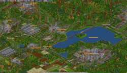

Current Sandbox game
Since the full members of #openttdcoop like me so much… they made me an aspirant to do all the dirty work! so here goes :p
Current sandbox game is a standard 512×512 map but this time it was generated by the lovely TGP. That in combination with low terraforming means alot of fun trying to make things and failing horribly! 🙂
We made a very simple square ML in the center, with 4 BBHs in each direction (north, east, south, west) with 2 SLHs for each BBH. At the end of each SLH is a Central Station (CS). Yup, we’re doing a CS/SBahn game!
Alot of things have to kept in mind here, most importantly: can your SBahn and CS combination handle all the trafic? Its not as straight forward as it seems!
First there are you SBahns. Some chose 3 tile trains, some chose 4 tile. I personally went with 3 tile. The tricky part here is to have everything go smoothly as your towns grow and more passengers end up at your SBahn stations. I went for a 2 way circular SBahn around the lake. The mistakes i made:
- I used a terminus for some SBahn/town stations. They’re fine for low trafic but once you get a couple more trains on it, it jams. Because every train needs to go over the same signal block.
- I used a 2/3 platform station, accessible from both sides with pre-signals. Again, fine for low trafic but on heavy trafic situations. For example: A train wants to enter the station, the presignal is green but as soon as it passes that another train from the other side enters the station. Result: 1st train gets stuck. Trains that are inside the station cant leave in that direction etc. Eventually everything got gridlocked. Solution: i made two 1-way roros. they might cue up but it wont gridlock anymore
- The importance of breaking tiles. With SBahns you have the tendency to reduce everything in size to make it as small as possible. You can do that with alot of things like curves etc. but DO keep your breaking tiles! its the difference between a station that jams and one that runs smoothly. 1 tile for each platform makes a huge difference for ‘smoothness’
Problem with big growth is that SBahn cant keep up. This isnt visible on the picture below but the town just east of this screenshot is pretty big. I connected six 3-tile ICEs to this station on top of the standard 10 orso handling the whole ring, which ended up beeing a 5 platform station to handle the extra trafic.
And then there are the ICE Central stations. You would not expect this but for every 2-2.5 SBahn trains arriving at the CS, you need 1 ICE to take the passengers away. With a proper SBahn and enough town to produce passengers, this is insane! A station apparently has a 4095 limit. My station was usually 3000+ usually close to 4000.
The only way this CS can be emptied is when about 8 to 9 ICEs arrive one after the other. Just enough to use the extra capacity to the west. This CS was emptied just once to my knowledge. Even though the extra capacity gets used frequently. I keep making trains but they cant keep up with my growing towns & SBahns.
You’ve all waited for it, after reading all this jumble… the screenshot! (thanks Osai :)) 

PS.: the SBahn drop station is a miniature version of the popular entry/exits used for big drops normally. Since SBahn speed is of less importance but taking less room IS important, it works 🙂
Categories: Public Server
Zavior August 26, 2006 12:56
Congratulations Jinx!